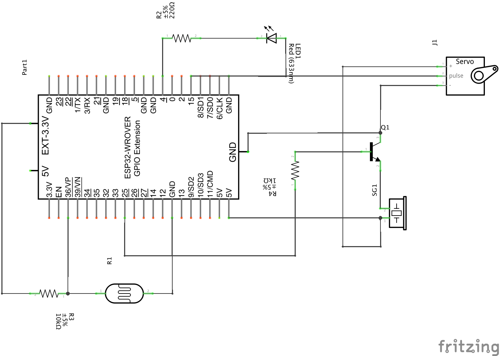
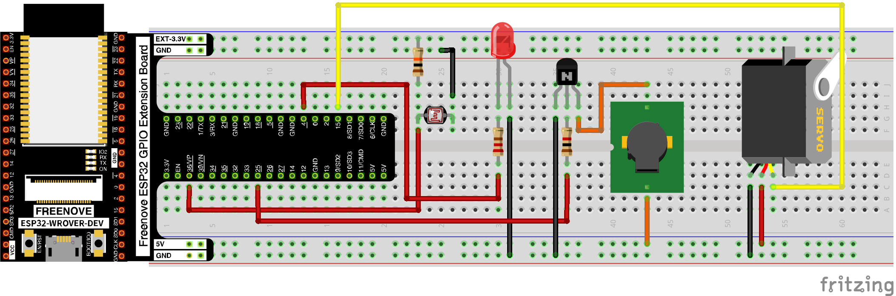
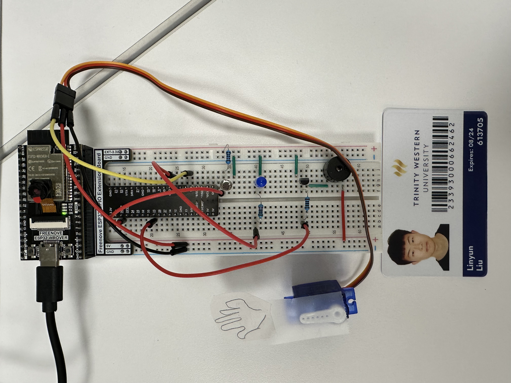
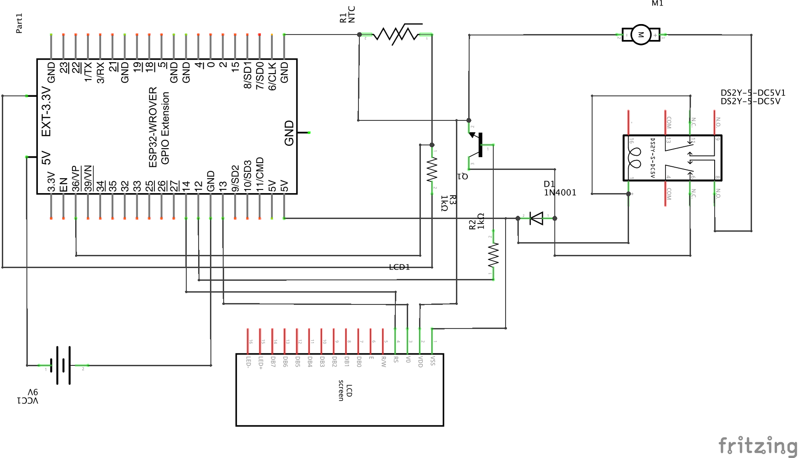
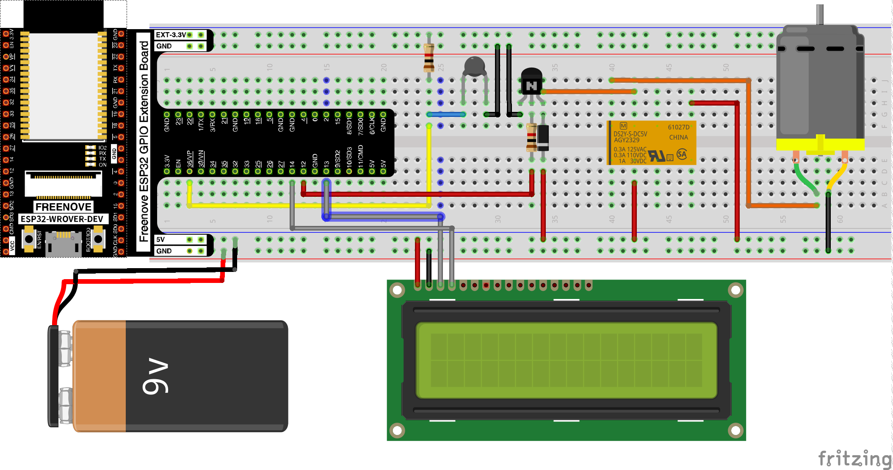
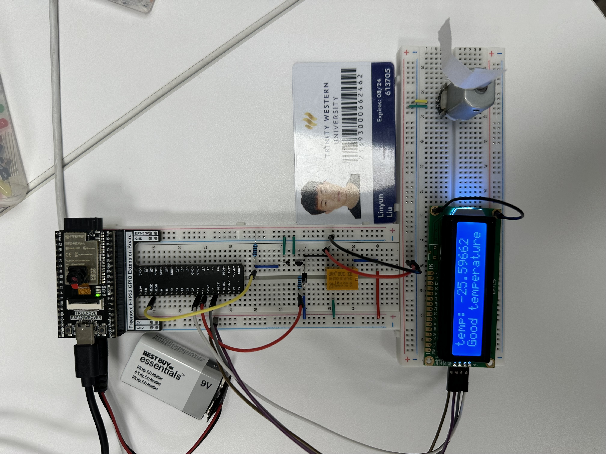

Lab Assignment Six 🍁
Relay & Motor, Servo, Stepper Motor, LCD 1602
Linyun Liu
Assignment Project 1 (10 marks)
Design and construct a circuit with a servo or stepper motor, a buzzer, a photoresistor, an LED, and other necessary electronic components. Attach a hand shape made from paper to the motor. When the room is bright, the circuit does nothing. But when the room becomes dark (or you cover the photoresistor with your hand), the circuit waves the hand, makes the LED blink, and plays a sad song (a good-bye song), similar to this (https://makeabilitylab.github.io/physcomp/) but using a photoresistor instead of computer vision. Capture your settings and working circuit in photos and videos (the videos should include sound).
• LIST OF HARDWARE:
Servo, Buzzer, NPN transistor, LED, Photoresistor, 1kΩ Resistor, 10kΩ Resistor, 200Ω Resistor, Jumpers, ESP32
• CIRCUIT DIAGRAM:
• BREADBOARD VIEW(S):
• PHOTO(S) OF YOUR SETTING ON THE BREADBOARD:
• VIDEO:
• SOURCE CODE:
View DownloadAssignment Project 2 (10 marks)
Design and construct a circuit that spins a fan blade with some message on an LCD display when the temperature is high enough using a DC motor, an LCD 1602, a thermistor, and other necessary electronic components. Attach a fan blade made from paper to the DC motor. When the temperature reaches the threshold temperature (you can do this using your hand or a hair dryer with hot air), the fan starts to spin with the message on the LCD display such as “Cool yourself down.” When the temperature is below the threshold temperature, the LCD display shows some other message such as “Good temperature.” Capture your settings and working circuit in photos and videos (the videos should include sound).
• LIST OF HARDWARE:
DC Motor, Relay, NPN transistor, Diode, Thermistor, LCD 1602, 1k*Ω* Resistor, Jumpers, ESP32, 9V Battery
• CIRCUIT DIAGRAM:
• BREADBOARD VIEW(S):
• PHOTO(S) OF YOUR SETTING ON THE BREADBOARD:
• VIDEO:
• SOURCE CODE:
View Download